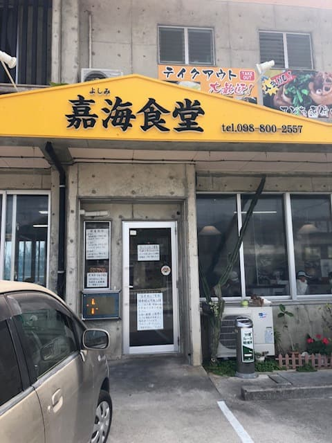
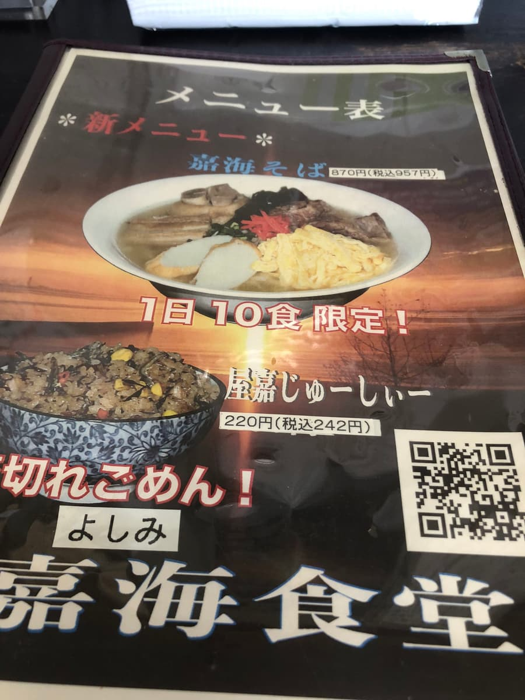
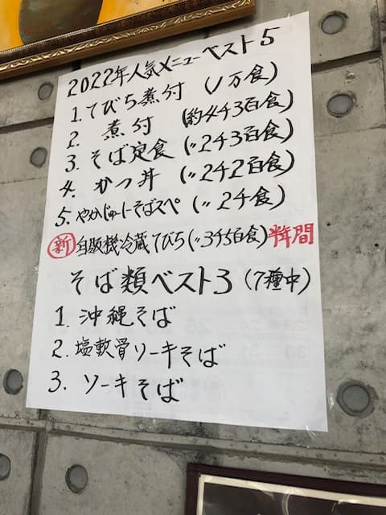
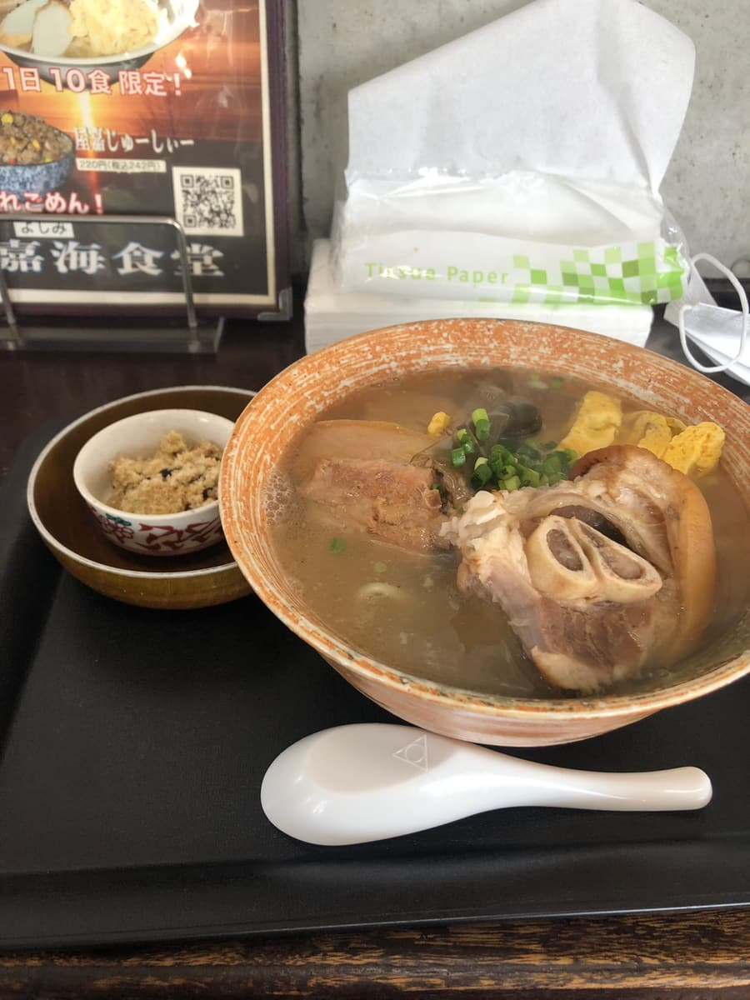

2023년 3월에 먹었습니다☺

가게 이름과 같고, 게다가 하루 10그릇 한정이라고 해서 '가카이 소바'를 주문했습니다😁



국물은 돼지뼈 베이스가 강한 편이고, 면은 중태면 스트레이트 타입. 고명은 돼지족(테비치), 돼지갈비(소키), 삼겹살 조림(산마이니쿠), 다시마, 달걀, 어묵(가마보코)을 모두 올리고 비지까지 곁들여져서 양이 푸짐합니다😊
평가(9점/15점): 평범하게 맛있습니다. 북부 지역 동해안 드라이브하실 때 어떠세요😁 그리고 사진은 없지만, 가게 앞에 '전국 최초'라고 적힌 '테비치(돼지족)'를 파는 자판기가 있습니다. 관광 스폿으로 사진발 잘 받는 포인트일지도요😁
면: ★★★☆☆（3）
수프: ★★★☆☆（3）
토핑: ★★★☆☆（3）